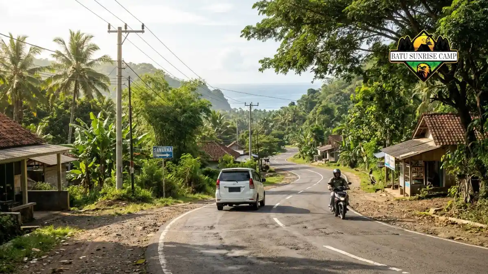

Biaya camping di Pantai Sawarna terdiri atas tiket sekitar Rp5.000 sampai Rp10.000 per orang, parkir, sewa lahan, dan makan, sehingga dapat dihemat dengan perencanaan.
- Tiket masuk kawasan dilaporkan Rp5.000 sampai Rp10.000 per orang, tergantung sumber dan hari.
- Parkir motor dan mobil dibayar terpisah dari tiket masuk.
- Sewa area camping dilaporkan sekitar Rp50.000 per malam, sedangkan villa jauh lebih mahal.
- Biaya terbesar biasanya berasal dari bensin, tol, dan makan, bukan dari tiket.
Berapa tiket masuk kawasan Pantai Sawarna?
Tiket masuk kawasan Pantai Sawarna dilaporkan berkisar Rp5.000 sampai Rp10.000 per orang, dengan tarif dapat berbeda antara hari kerja, akhir pekan, dan hari libur nasional.
Good News From Indonesia edisi 24 Mei 2026 menyebut BUMDes Sawarna menarik retribusi Rp5.000 per orang di gerbang utama desa, dan tiket itu mencakup akses ke Pantai Pasir Putih Ciantir.
Laman Indonesia Travel menyebut tiket Rp10.000 per orang dan menjelaskan bahwa dana tersebut mendukung pengelolaan Desa Wisata Sawarna.
Orami pada Agustus 2024 mencatat tiket Rp5.000 pada hari Senin sampai Jumat, serta Rp10.000 pada Sabtu, Minggu, tanggal merah, dan libur nasional.
Karena sumber berbeda, rencanakan anggaran tertinggi, yakni Rp10.000, lalu konfirmasi tarif di gerbang. Gambaran lokasi dan titik tenda dapat dibaca di panduan lengkap camping di Pantai Sawarna.
Berapa tarif parkir kendaraan di Sawarna?
Tarif parkir di Sawarna yang pernah dilaporkan adalah Rp5.000 untuk sepeda motor dan Rp10.000 untuk mobil, dibayar terpisah dari tiket masuk kawasan wisata.
Angka tersebut berasal dari Orami pada Agustus 2024, sehingga tarif 2026 dapat berbeda. Pengunjung yang membawa mobil biasanya memarkir kendaraan di kantong parkir utama.
Good News From Indonesia edisi 24 Mei 2026 menyebut akses ke Pantai Tanjung Layar hanya dapat dilalui motor atau berjalan kaki.
Bagi rombongan, ada dua strategi hemat. Pertama, patungan satu mobil untuk membagi biaya bensin, tol, dan parkir. Kedua, mengurangi jumlah kendaraan agar biaya parkir tidak berlipat. Pastikan kendaraan terkunci dan barang berharga tidak tertinggal di dalam mobil.
Berapa biaya sewa area camping dan villa?
Sewa area camping di Sawarna dilaporkan sekitar Rp50.000 per malam, sedangkan villa berkisar Rp500.000 sampai Rp2.000.000 per malam, tergantung ukuran dan fasilitas.
Kisaran tersebut berasal dari panduan wisata Astra Otoshop yang tidak mencantumkan tanggal pasti, sehingga perlu diverifikasi saat berkunjung.
Tarif dapat naik pada musim liburan. Tanyakan lebih dulu apakah harga sudah termasuk akses toilet, air bersih, dan listrik.
Perbandingan sederhananya: untuk empat orang, satu malam di villa dapat dibagi sehingga biaya per orang menjadi ratusan ribu rupiah, sedangkan camping hanya membutuhkan sewa lahan dan perlengkapan sendiri.
Camping lebih hemat, tetapi menuntut perlengkapan memadai. Daftar barangnya ada di panduan perlengkapan camping di Pantai Sawarna.
Berapa estimasi total biaya camping per orang?
Estimasi biaya camping di Sawarna per orang bergantung asal perjalanan, tetapi biaya lokal seperti tiket dan sewa lahan relatif kecil dibanding transportasi dan makan.
Sebagai ilustrasi hitungan sendiri, bukan data resmi, biaya lokal untuk satu orang dengan satu malam dapat disusun seperti berikut:
- Tiket masuk: Rp5.000 sampai Rp10.000.
- Sewa area camping: sekitar Rp50.000, bila dikenakan.
- Parkir motor: sekitar Rp5.000, atau parkir mobil sekitar Rp10.000 dibagi rombongan.
- Makan dan minum: tergantung pilihan warung dan bekal.
Dengan komponen itu, biaya lokal dapat berada pada kisaran puluhan ribu rupiah per orang sebelum makan.
Perjalanan dari kota asal, misalnya bensin dan tol, akan menjadi komponen terbesar. Karena itu, pilih hari kerja bila fleksibel, bawa bekal dari rumah, dan bagi biaya kendaraan.
Bagaimana rute menuju Sawarna dari Jakarta?
Rute menuju Sawarna dari Jakarta dapat melewati jalur barat via Serang, Pandeglang, Malingping, dan Bayah, atau jalur timur via Bogor, Cibadak, Pelabuhan Ratu, dan Cisolok.
Menurut Indonesia Travel, jalur barat yang disebutkan antara lain Jakarta, Serang, Pandeglang, Saketi, Malingping, Bayah, lalu Sawarna.
Alternatif lain adalah Jakarta, Rangkasbitung, Gunung Kencana, Malingping, Bayah, kemudian Sawarna. Sementara itu, jalur timur melalui Jakarta, Ciawi, Bogor, Cibadak, Pelabuhan Ratu, dan Cisolok.

Akses jalur darat menuju kawasan Pantai Sawarna melewati rute perbukitan dan pesisir selatan yang dapat diakses dari Jakarta maupun Bandung.
Waktu tempuh sangat dipengaruhi lalu lintas, kondisi jalan, dan cuaca, sehingga sebaiknya berangkat pagi. Gunakan peta digital terbaru dan simpan peta secara luring karena sinyal di sebagian jalur pesisir dapat melemah.
Bagaimana rute menuju Sawarna dari Bandung?
Rute menuju Sawarna dari Bandung umumnya melewati Cianjur, Sukabumi, Cibadak, Pelabuhan Ratu, dan Cisolok sebelum tiba di Desa Sawarna, Kecamatan Bayah, Kabupaten Lebak.
Rute ini sesuai informasi Indonesia Travel. Perjalanan melewati jalur pegunungan dan pesisir yang berkelok, sehingga pengemudi perlu istirahat cukup.
Isi bahan bakar sebelum memasuki ruas yang lebih sepi, dan siapkan uang tunai untuk parkir serta warung.
Setelah tiba di desa, tentukan lebih dulu titik camping dan cara menuju lokasi tenda, terutama bila ingin ke Tanjung Layar yang ditempuh berjalan kaki sekitar 30 menit. Aspek keselamatan perjalanan dan bermalam dibahas di panduan keselamatan camping di Pantai Sawarna.
Bagaimana cara menghemat biaya camping di Sawarna?
Cara menghemat biaya camping di Sawarna adalah berangkat pada hari kerja, berbagi kendaraan, membawa bekal, meminjam perlengkapan, dan membandingkan tarif sewa lahan sebelum membayar.
Hari kerja biasanya lebih murah karena tiket yang dilaporkan Orami lebih rendah dibanding akhir pekan. Patungan kendaraan menekan biaya bensin dan parkir.
Bekal makanan sederhana mengurangi pengeluaran di warung, meski sesekali membeli makanan lokal tetap membantu ekonomi warga.
Hindari membeli perlengkapan baru bila hanya dipakai sekali. Pinjam tenda dari teman atau komunitas.
Catat semua pengeluaran dan sisihkan dana darurat kecil untuk kebutuhan tak terduga, misalnya parkir tambahan atau kenaikan tarif di musim liburan.
Kesimpulan
Biaya camping di Pantai Sawarna relatif terjangkau karena komponen lokalnya kecil, yaitu tiket, parkir, dan sewa lahan, sedangkan pengeluaran terbesar muncul dari transportasi dan konsumsi.
Gunakan angka tertinggi saat menyusun anggaran, lalu konfirmasi tarif di gerbang desa. Untuk persiapan teknis dan titik tenda, buka panduan utama camping di Pantai Sawarna.

Pertanyaan yang sering diajukan (FAQ)